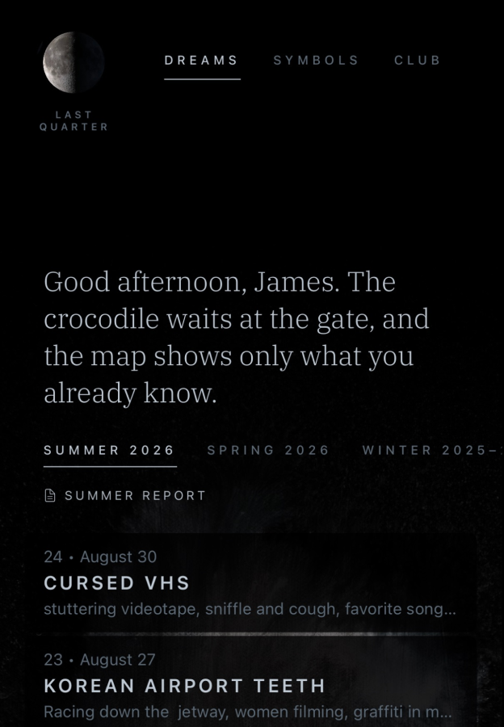
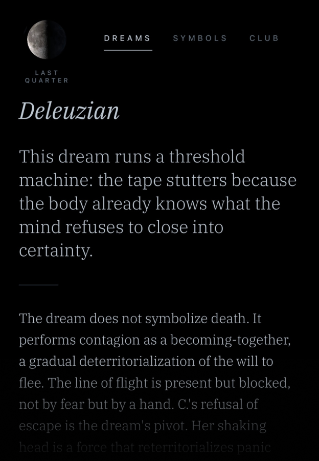
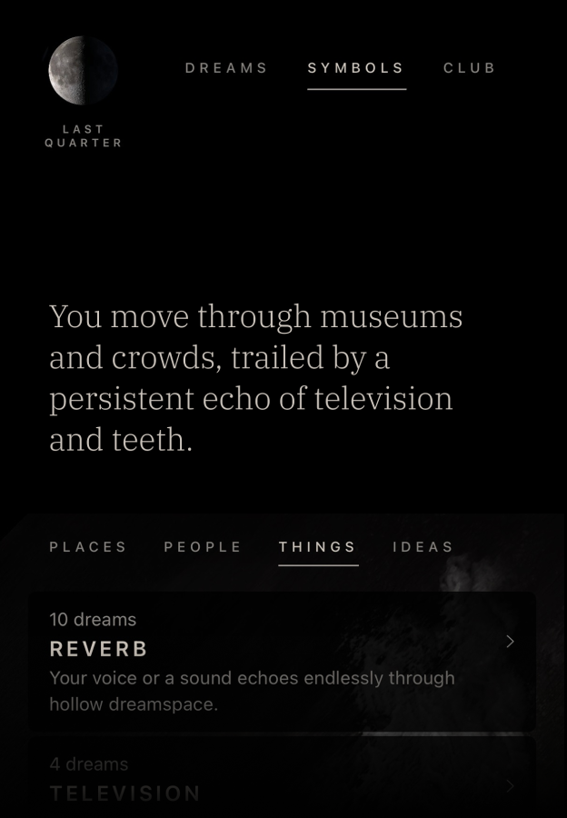
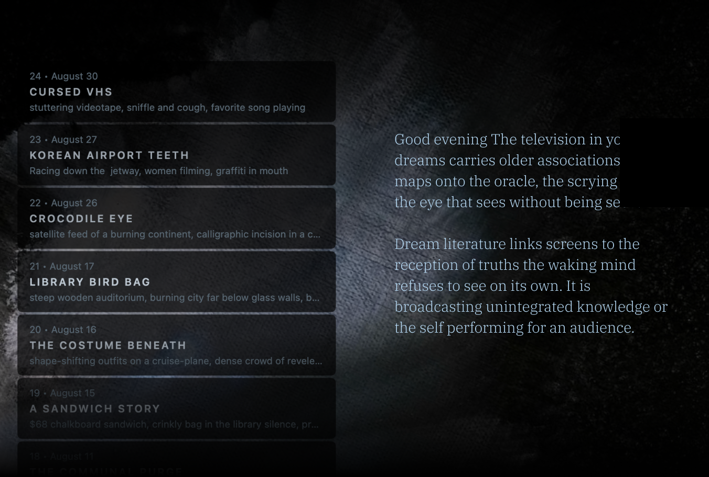

Waxing Gibbous
Week 31 • Day 1
Dream Club
A dignified home for your dreams.
Free for 30 days, then $10 to unlock it forever on all devices with ongoing updates.
Waxing Gibbous
Week 31 • Day 1
A dignified home for your dreams.
Free for 30 days, then $10 to unlock it forever on all devices with ongoing updates.




Log your dreams while half-awake via text or voice.
Share a dream with a circle of friends and receive synchronicity alerts.
Analyze your dreams through three lenses: Jungian, Lacanian, and Deleuzian.
A companion desktop app for organizing, searching, and editing.
No ads. No subscriptions. No account required. Your dreams stay on your device.
Here in the Middle West of the United States, we meet with friends every month to discuss our dreams. This ritual has led us to reappreciate these strange movies in our heads when we’re free from ego and intention. So we built Dream Club to make it easier to collect, analyze, and share our dreams.
An archive of your dreaming life. Every dream stays on your device and in your own iCloud—synced across your devices, safe through reinstalls, readable only by you unless you choose to share it.
Get a different perspective on your dreams by running them through three analytical lenses:
Each analysis concludes with a question to carry into the day.
Every analyzed dream's key images—fire, staircases, teeth—become part of a personal codex of symbols and themes. A mythology will surface.
Totally optional: Create a private, invite-only group of up to twelve people you know and share a dream. If a friend's dream shares the same symbols, Dream Club delivers a synchronicity alert.
No ads. No trackers. No feeds or strangers. Your journal never touches our servers unless you request an analysis (sent anonymously, never stored) or share a dream with your circle of friends.
Signing in with your Apple ID is optional: the journal and the analysis work without an account. Read our privacy policy →
Free for 30 days, then $10 to unlock it forever on all devices with ongoing updates.